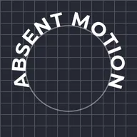

Texto en trazado

Coloca el texto a lo largo de un arco, un círculo o el contorno de la capa justo debajo, letra a letra, manteniendo la forma, las fuentes y los emoji del texto.
Elige el Trazado: un arco o un círculo alrededor de la capa de texto (arrastra sus puntos en el lienzo o escríbelos), o Capa inferior para seguir lo que está justo debajo del texto en la lista de capas: un trazado de pluma, una forma, los trazos de un dibujo o las letras de otro texto. En un círculo o cualquier contorno cerrado, Posición al 50 % centra el texto en la parte superior, leyéndose de izquierda a derecha, y el 0 % es la parte inferior; con Invertir trazado activado, el 0 % coloca el texto a lo largo de la parte inferior, leyéndose igualmente de izquierda a derecha. Un trazado con varias partes se sigue una parte tras otra. El texto en un trazado no se ajusta a su cuadro de texto: empieza tú una nueva línea para una segunda fila.
Ajustes
| Ajuste | Tipo | Rango | Predeterminado |
|---|---|---|---|
| Trazado | Opción | Arco, Círculo, Capa inferior | Arco |
| Posición | Número | -500% a 500% | 50% |
| Alineación | Opción | Izquierda, Centro, Derecha | Centro |
| Desplazamiento de línea base | Número | -2000 a 2000 | 0 |
| Girar letras | Activado o desactivado | – | Activado |
| Invertir trazado | Activado o desactivado | – | Desactivado |
| Inicio | Punto (X, Y) | -20000 px a 20000 px | -300 px, 80 px |
| Control 1 | Punto (X, Y) | -20000 px a 20000 px | -200 px, -120 px |
| Control 2 | Punto (X, Y) | -20000 px a 20000 px | 200 px, -120 px |
| Fin | Punto (X, Y) | -20000 px a 20000 px | 300 px, 80 px |
| Centro | Punto (X, Y) | -20000 px a 20000 px | 0 px, 0 px |
| Radio | Número | 1 a 20000 | 220 |